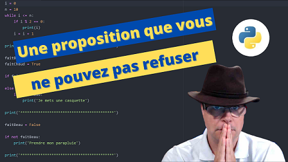
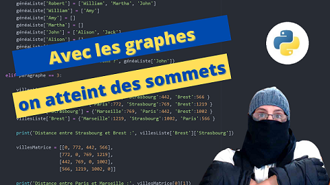
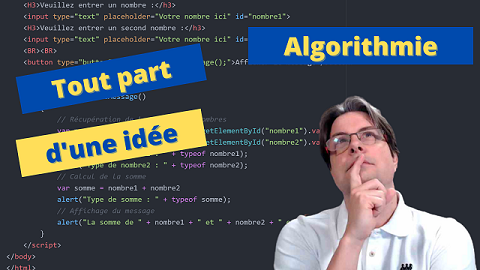

BTS SIO
Arithmétique
Conversions de bases
Nombres décimaux et opérations
Nombres premiers
Congruence
Matrice
Généralités sur les matrices
Opérations sur les matrices
Système d'équations et matrices
Calcul matriciel avec Numpy

Logique
Logique et propositions
Logique et prédicats
Logique et algèbre de Boole
Ensemble
Ensemble et langage ensembliste
Ensemble et relation binaire
Ensemble et application d'ensemble

Graphe
Représentation des graphes
Longueurs dans un graphe
Niveau des sommets dans un graphe
Graphe et ordonnancement

Algorithmie
Qu'est-ce qu'un algorithme ?
Les conditions
Les fonctions
Les tableaux
Révisions
Révision des matrices
Révision en arithmétique
Révision en logique
Révision sur la théorie des ensembles
Exercice sur la théorie des ensembles